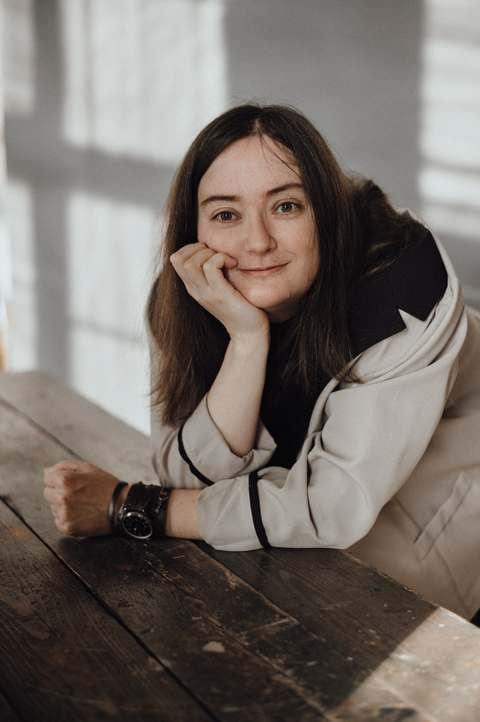

Всё понимаю, а внутри ничего не сдвигается
Можно знать причины, видеть свои закономерности и всё равно снова попадать в то же состояние. Как будто понимание есть, а внутри всё осталось по-прежнему.
Психолог и сертифицированный супервизор
Можно очень хорошо понимать, почему вам плохо, и всё равно чувствовать, что внутри ничего толком не изменилось. И тело реагирует, и эмоции накрывают, и старые реакции снова появляются.
Поэтому на консультации мало просто понять, что происходит, и решить, что делать в следующий раз. Смотрим, какие чувства и внутренние конфликты за этим стоят, чего когда-то не хватило, какие выводы пришлось сделать о себе, других и своих возможностях. Часто работаем не только разговором, но и через образы и телесные ощущения.
Мне важно не просто помочь объяснить происходящее, а помочь изменить то, как оно устроено и проживается внутри.
С чем можно прийти
Можно знать причины, видеть свои закономерности и всё равно снова попадать в то же состояние. Как будто понимание есть, а внутри всё осталось по-прежнему.
Тревога, злость, стыд, вина, страх или обида становятся такими сильными, что трудно с ними что-то делать. Или вы долго держите всё внутри, пока не становится совсем тяжело.
Болит голова, сводит плечи, сбивается сон, беспокоит живот, колотится сердце. Особенно после определенных разговоров, событий или нагрузок.
Одна часть хочет изменений, другая будто удерживает всё как есть. Это может проявляться в отношениях: трудно сказать «нет», попросить о помощи, подпустить ближе или, наоборот, не растворяться в другом.
Ситуация изменилась, отношения закончились, опасности больше нет, а тело и эмоции всё ещё реагируют так, будто происходящее продолжается.
Для кого
Работаю только со взрослыми людьми старше 18 лет.
Не работаю с зависимостями в активной фазе.
Как я работаю
Понять, откуда всё взялось, бывает важно. Но иногда этого недостаточно, потому что опыт продолжает жить не только в словах: в образах, телесных ощущениях, чувствах, внутренних решениях и способах защищаться.
Что вы чувствуете, чего боитесь или хотите, что происходит в теле, какие образы приходят, где внутри есть конфликт. Отдельно смотрим, какие потребности когда-то остались без ответа и какие решения пришлось принять, чтобы справляться.
Образы и телесные ощущения помогают работать с прошлым опытом, который продолжает вызывать привычные чувства и телесные реакции, даже когда головой уже понятно, откуда всё взялось. В работе меняется не прошлое, а то, как оно переживается сейчас и какую реакцию вызывает.
Если когда-то выбора было мало, в работе можно возвращать себе то, чего тогда не хватало: защиту, поддержку, право хотеть, злиться, отказываться, просить и действовать. И уже из этого принимать другие решения и по-другому переживать похожие ситуации сейчас.
Если моя гипотеза не сходится с вашей историей, меняем гипотезу, а не вашу историю.
Теории и методы нужны мне, чтобы строить гипотезы. В работе для меня важнее живой человек, его внутренний опыт и то, что действительно меняется.Если вопрос связан с телом
Стресс действительно может влиять на тело. Но фраза «это от нервов» сама по себе почти ничего не объясняет.
Смотрим, когда появился симптом, что его усиливает, что происходит в это время в жизни и что уже известно о здоровье. Иногда психологическая часть оказывается важной. Иногда всё началось по вполне телесной причине. Иногда первым делом нужен врач.
Одна встреча
У встречи есть каркас, но работа не сводится к разговору по пунктам. Иногда мы подробно разбираем происходящее словами, иногда переходим к образам, телесным ощущениям и тому, что обнаруживается уже по ходу работы.
Несколько слов о состоянии, последних событиях и о том, что сейчас больше всего занимает.
Иногда запрос уже понятен. Иногда его сначала приходится собрать из того, что сейчас беспокоит.
Это может быть разговор, работа с образом, телесным ощущением, внутренним конфликтом, старым решением или частью опыта, которая до сих пор живет так, будто выбора нет.
Смотрим, что стало понятнее, что теперь ощущается иначе, какие новые решения или возможности появились и на чем сегодня имеет смысл остановиться.
Формат
Можно прийти на одну консультацию и после нее решить, есть ли смысл продолжать.
Zoom, 55-60 минут
район м. Краснопресненская, 55 минут
Принимаю оплату из России и из-за рубежа. Для зарубежных клиентов способ оплаты уточняем при записи.
Написать и выбрать времяСупервизия
На супервизии можно разбирать клиентский случай, рабочие гипотезы, трудные места в процессе и собственные реакции в работе с клиентом.
Zoom
Организационно
Напишите мне в Telegram. Можно коротко рассказать, что происходит, и написать, хотите встретиться онлайн или очно. Время считаем согласованным после того, как я его подтвержу.
Оплата после встречи. Принимаю оплату из России и из-за рубежа. После каждой оплаты формирую чек в «Мой налог». По запросу отправляю его в переписке.
Если планы меняются, лучше предупредить заранее. Подробные условия переноса и отмены есть на отдельной странице.
Если мне приходится перенести встречу менее чем за 24 часа, следующая встреча для вас бесплатная.

Обо мне
Психолог и сертифицированный супервизор
До психологии я занималась микробиологией, потом работала специалистом и руководителем. И в психологию принесла с собой привычку проверять гипотезы, а не влюбляться в первое красивое объяснение.
Мне мало ответа «это от стресса». Важно понять, что именно происходит с конкретным человеком: как связаны его история, чувства, тело, отношения и привычные способы справляться, и какие физиологические факторы могут на это влиять.
Не держусь за один метод. Важная часть моей работы — эмоционально-образная терапия (ЭОТ): образы помогают исследовать внутреннюю реальность, чувства, старые решения и то, как человек когда-то приспособился к происходящему. Использую также ориентированную на решение краткосрочную терапию (ОРКТ) и инструменты когнитивно-поведенческой терапии (КПТ), когда они подходят к задаче. Работа не сводится к коррекции мыслей и поведения.
И я не начинаю с борьбы с реакцией. Если она держится годами, сначала разбираемся, зачем она вообще понадобилась, что защищает, чего не хватает и какой внутренний конфликт поддерживает эту реакцию. А потом работаем с этим так, чтобы менялась не только сама реакция, но и то, из чего она выросла.
Telegram
В канале я пишу подробнее о психологии, теле, исследованиях и спорных идеях. Там проще понять мой способ думать и работать, чем по списку методов.
Образование
Организационная психология, 2025
Сертифицированный супервизор
Напишите пару предложений о том, что происходит. Я отвечу и предложу варианты времени.